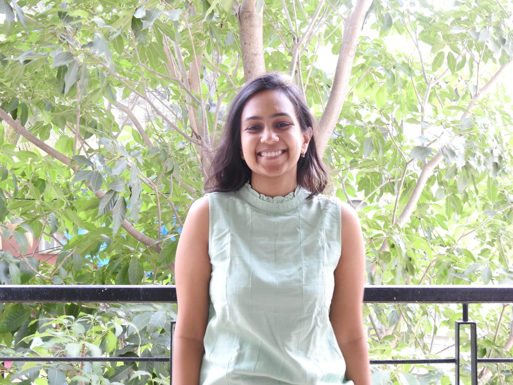

Hi, I'm Tvisha! I research violence against women and children to help prevention programs work better.
I currently work with the Coalition for Good Schools and Raising Voices as an independent consultant based in the UK. Before that, I led the Learning department at Raising Voices in Uganda. I've also supported randomised controlled trials evaluating programme impacts on violence and gender equality at IPA Uganda and J-PAL South Asia. Over the last decade, I have collaborated with NGOs and research institutions working on violence prevention globally.
I work with quantitative, qualitative and participatory methods, grounded in feminist practice, mostly alongside schools and communities in the Global South, at every stage of a prevention programme from design to scale.

Selected work
All writing & talks →Field-building
Alongside research and programming, I contribute to field-building initiatives — including advising research priority setting exercises and speaking on knowledge generation processes.